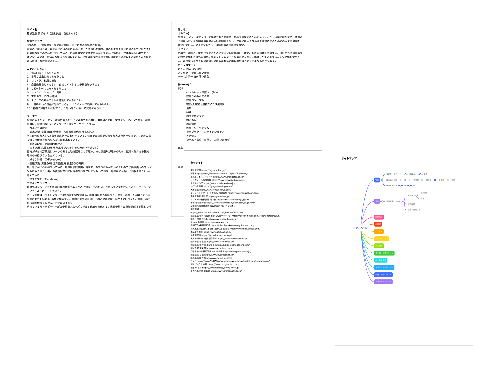
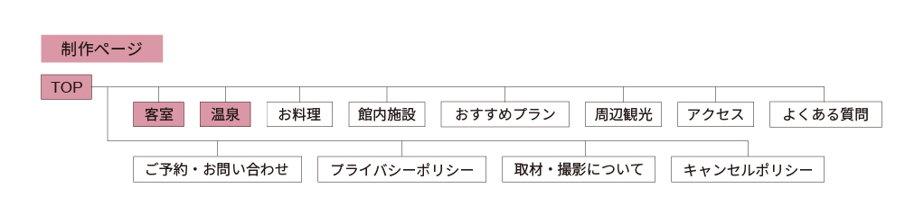
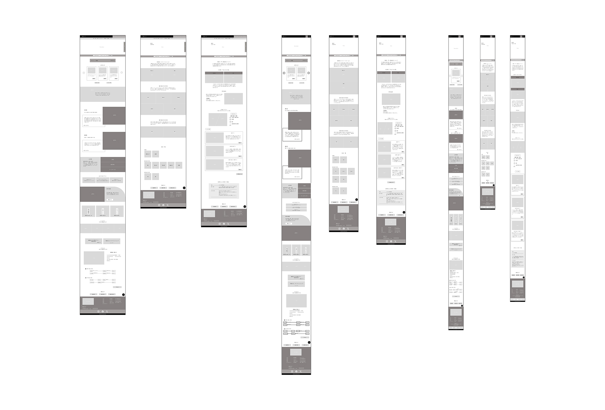
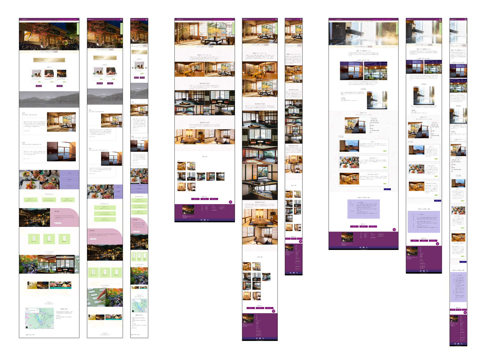

旅館概要
旅館の舞台は、神奈川県・箱根の芦ノ湖温泉。宿名の「朝ぼらけ」は夜明けのほのかに明るくなった頃合いを指す。歴史ある客室や、名湯である芦ノ湖温泉を売りとしている。
制作期間
2024年07月20日～2024年08月27日
作業範囲
- 企画・情報収集(5h)
- コンセプトシート(5h)
- ワイヤーフレーム(15h)
- 文書作成(2h)
- 画像処理(3h)
- デザインカンプ(10h)
- HTML(5h)
- CSS(26h)
- レスポンシブ対応(10h)
- バナー制作(1h)
企画書

サイトマップ

ワイヤーフレーム

サイトの目的
- 1.宿泊客の増加
- 2.日帰り温泉客の増加
- 3.リピーターの増加
ターゲット
旅館のメインターゲットは箱根観光のメイン客層である40～60代のご夫婦・女性グループとしており、客単価10万/1泊を想定しアッパーマス層をターゲットとする。
ペルソナ
-
鈴木綾香(40歳女性/会社員・人事部部長代理/年収680万円)
学生時代の友人3人と毎年温泉旅行に出かけている。独身で金銭感覚の合う友人との旅行なので少し高めの宿で日々の仕事を忘れられる体験を求めている。(好きなSNS：Instagram/X)
-
山本美穂(52歳女性/専業主婦/世帯年収800万円/子供なし)
歴史が好きで万葉集にゆかりのある土地を巡ることが趣味。夫は城巡りが趣味のため、近場に城のある観光地での旅行プランを立てている。(好きなSNS：X/Facebook)
-
渡辺真聡(66歳男性/定年退職済/資産6000万円)
娘・息子がいるが独立している。趣味は家庭菜園と料理で、あまりお金がかからないので子供や妻へのプレゼントに多く使う。妻との結婚記念日には毎年旅行をプレゼントしており、毎年なにか新しい体験を贈りたいと考えている。(好きなSNS：Facebook)
デザインカンプ

デザインについて
全体のコンセプト
最優先コンバージョンは宿泊客の増加であるため「泊まってみたい」と感じていただけることをトップページで狙う。歴史があり、風情を感じられる色を紫をメインカラーに設定。
カラー
旅館ターゲットはアッパーマス層であり高級感・気品を表現するためにメインカラーは紫を配色。旅館名「朝ぼらけ」は夜明けの、ほの明るい時間帯を指し、次第に明るくなる空を連想させるために赤みよりの紫を選定。アクセントカラーは補色の黄緑系統を選定。
フォント
古典的・和風の印象付けをするためにフォントは見出し・本文ともに明朝体を使用。他社でも使用率の高い游明朝体を最優先に採用。詳細リンクのタイトルはボタンとして認識しやすいようにゴシック体を使用。またゆったりとした印象をつけるために行間を大きく取る。
コーディングについて
ワイヤーフレーム制作の段階で、レスポンシブ対応しやすいような構造を考えflexやgridを使用。スマホで見る際にも美しくなることを心がけた。jQueryプラグインのbxsliderを実装し、ファーストビューなどでユーザーを引き込むことを意識。